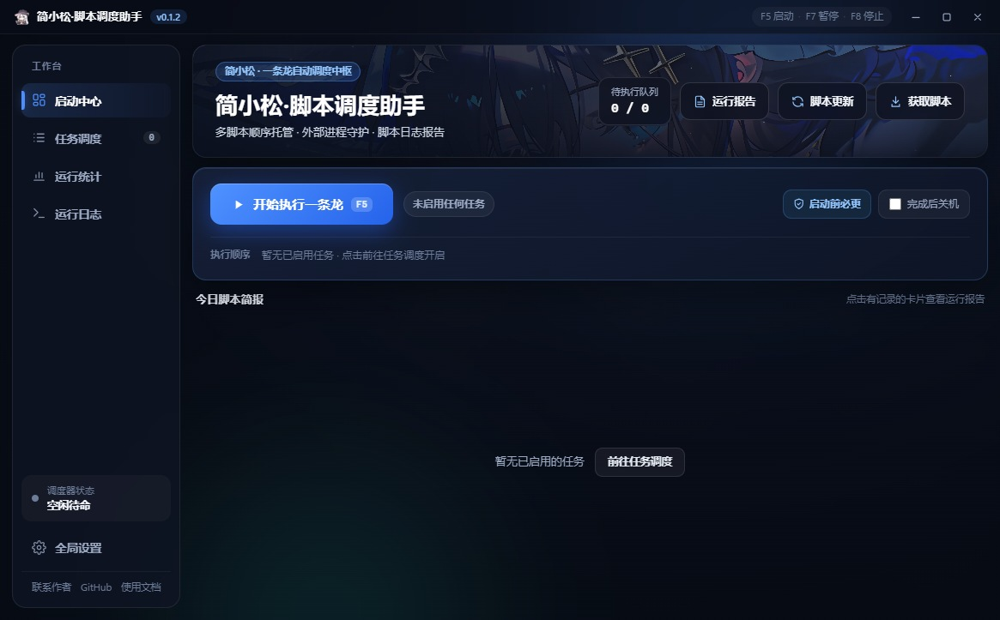
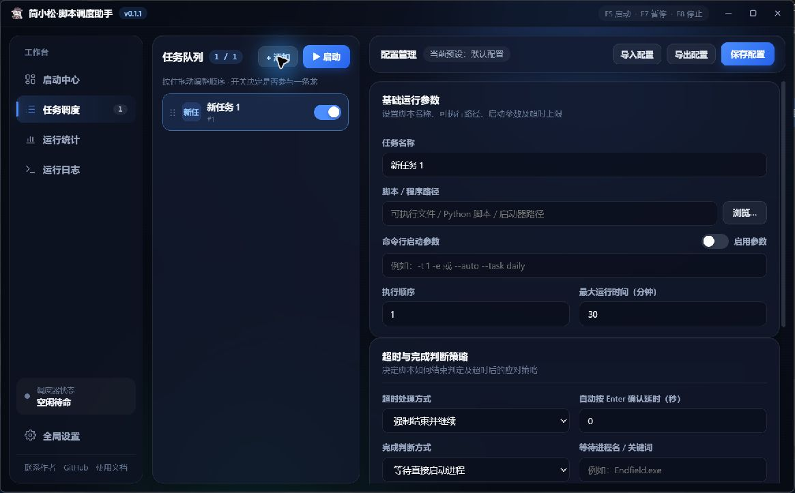
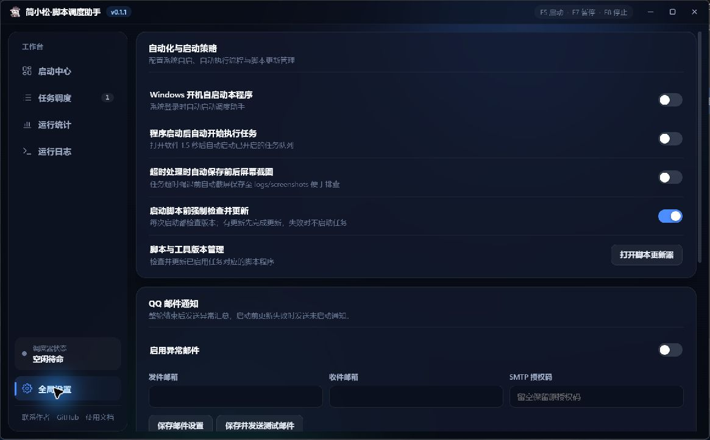

首次运行
- 先独立运行第三方工具，确认脚本或启动器可用。
- 在任务调度中添加并保存一项任务。
- 回到启动中心，点击开始执行一条龙。先验证单项，再增加其他任务。

任务配置
点击+ 添加，填写名称和脚本或程序路径。需要参数时打开启用参数。设置最大运行时间和完成判断后，点击保存配置。
- 程序自己运行到结束时，选择等待直接启动进程。
- 启动器会退出并交给另一个程序时，监控实际工作的目标进程。
- 需要等待游戏或模拟器窗口结束时，监控可稳定区分目标的窗口标题。
可在任务队列中拖动调整顺序。需要并行时，将同组任务相邻排列，在任务详情中设置相同的并行组和策略。确认超时处理方式后再进行无人值守运行。

脚本更新
从启动中心的脚本更新或全局设置的打开脚本更新器进入。检查并选择需要更新的工具。未适配的工具使用各自的更新方式。
启动队列前会检查适用工具的版本并安装待更新版本。三月七遇到更新源故障时会尝试替补路径，也可在确认原版本可用后继续本轮队列。
需要安装新工具时，可点击启动中心的获取脚本查看 Mirror酱项目列表，也可从各项目的官方页面下载。
全局设置
- 按需启用 Windows 开机自启动、打开程序后自动执行、完成后关机或退出。打开后自动执行前有 5 秒倒计时，点击取消可跳过本次自动启动。
- 开启每日定时启动、选择时间并保存。到点时电脑需开机、已登录并保持未锁屏。
- 开启关闭窗口时收进系统托盘后，点关闭按钮可继续后台运行，双击托盘图标恢复窗口，右键菜单可退出。
- 在软件版本与关于中检查简小松自身的版本，或者打开项目主页和文档。
- 先验证任务能正确结束，再开启完成后关机。倒计时期间可以在界面取消关机。
- QQ 邮件通知可发送异常汇总和启动前更新失败通知。填写收发邮箱及发件账号的 SMTP 授权码后，发送测试邮件验证。

故障排查
任务没有启动
确认任务已启用，配置已保存，路径与参数有效。若启动前更新失败，查看更新器里的结果。
任务过早结束或一直等待
打开运行日志核对监控目标。识别到启动器提前退出或目标仍驻留时，调整完成判断方式和关键词后单项重试。
查看运行记录
运行统计查看用时与最近结果。启动中心的运行报告查看可识别的脚本报告。开启超时截图后，可到 logs/screenshots/ 查看截图。